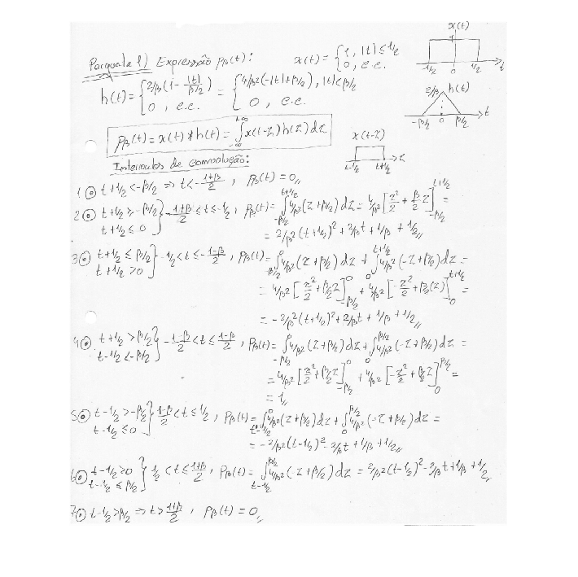
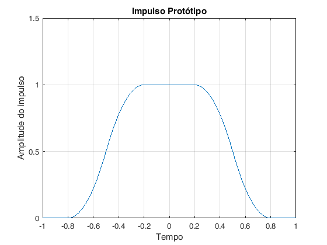
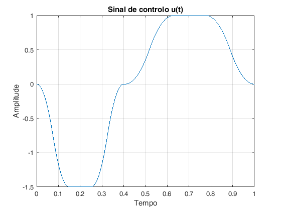
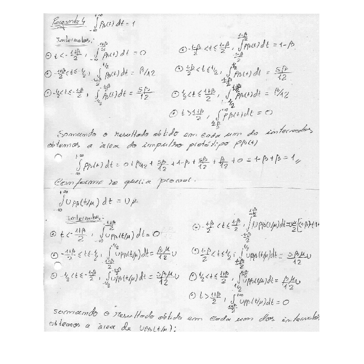
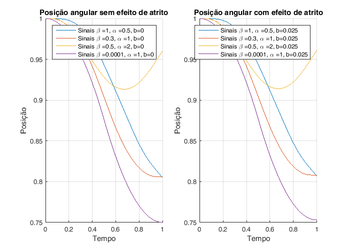

Trabalho de Laboratório nº2 - Optimização do servomecanismo de um disco rígido
Autor: Diogo Vilar Sardinha
Contents
close all; n=1; % inicialização do contador para as figuras
Questão 1 - expressão analítica
n=1; % inicialização do contador para as figuras figure(n) n=n+1;I = imread('./figures/Scan10001.jpg'); imshow(I);
Warning: Image is too big to fit on screen; displaying at 33%
Questão 2 - Geração do impulso protótipo
beta pertence ao intervalo [0,1]. beta controla a suavidade dos flancos dos impulsos.
beta = 0.6; % criação do vector com os instantes de tempo t_min=-1; t_max=1; p=100; % número de pontos para a escala do tempo t=linspace(t_min,t_max,p); % geradora - Função que gera o impulso protótipo. impulso = geradora_pb(t,beta); hold all; figure(n); n=n+1; plot(t,impulso); XMIN=-1; XMAX=1; YMIN=0; YMAX=1.5; axis ([XMIN XMAX YMIN YMAX]); grid on xlabel('Tempo'); ylabel('Amplitude do impulso'); title('Impulso Protótipo');
Questão 3 - Geração de um sinal de controlo u(t)
Nesta questão pretende-se apenas testar se a função para criar u(t), está correcta, definindo assim valores arbitrários para as amplitudes U1 e U2, para alpha, beta e valores de T.
% duração total da forma de onda T = 1; alpha = 1.5; % número de pontos para a escala do tempo de cada um dos impulsos n1 = 100; n2 = 100; % Amplitudes U1 = -1.5; U2 = 1; % Sinal u(t) e sua duração [ut, tempo] = geradora_ut(T,alpha,beta,U1,U2,n1,n2); figure(n); n=n+1; plot(tempo,ut); grid on xlabel('Tempo'); ylabel('Amplitude'); title('Sinal de controlo u(t)');
Questão 4 - Área de uma versão escalada em amplitude e no tempo
n=1; % inicialização do contador para as figuras figure(n) n=n+1;I = imread('./figures/Scan10002.png'); imshow(I);
Questão 7 - Testes da dinâmica do sistema para diferentes parâmetros
Nesta questão simulamos a dinamica do sistema para diferentes valores dos parametros que compõem o sinal de comcontrolo u(t)
Diagrama de blocos que simula a dinâmica do servomecanismo do disco rígido
open_system('dinamicadosistema') % duração total do sinal de entrada u(t) (de controlo) T = 1; % número de pontos para a escala do tempo de cada um dos impulsos de u(t) n1 = 100; n2 = 100; % Amplitudes U1 = -1; U2 = 1; %Parametros a testar beta_aux=[1 0.3 0.5 0.0001]; alpha_aux=[0.5 1 2 1]; %Estados Iniciais dy0=0; y0=1;
Sinais de controlo u(t)
% Simulações sem perturbação do sistema com efeito de atrito (b=0) b=0; figure(n) fig = figure(n); set(fig, 'Position', [0, 0, 700, 500]) % x, y, largura e comprimento da figura n=n+1; hold all; for k=1:4 beta = beta_aux(k); alpha = alpha_aux(k); [ut, tempo] = geradora_ut(T,alpha,beta,U1,U2,n1,n2); entrada = [tempo' ut']; sim('dinamicadosistema',tempo); plot(tempo,ut,'DisplayName', ['{\beta }=',num2str(beta),', {\alpha }=',num2str(alpha),', b=',num2str(b)]); end xlabel('Tempo'); ylabel('Amplitude'); title('Sinais de controlo u(t)'); grid on legend('show')

Velocidades angulares para diferentes parametros
% Simulações sem perturbação do sistema com efeito de atrito (b=0) b=0; figure(n) fig = figure(n); set(fig, 'Position', [0, 0, 800, 500]) % x, y, largura e comprimento da figura n=n+1; subplot(1,2,1) hold all; for k=1:4 beta = beta_aux(k); alpha = alpha_aux(k); [ut, tempo] = geradora_ut(T,alpha,beta,U1,U2,n1,n2); entrada = [tempo' ut']; sim('dinamicadosistema',tempo); plot(tout,v,'DisplayName', ['Sinais {\beta }=',num2str(beta),', {\alpha }=',num2str(alpha),', b=',num2str(b)]); end xlabel('Tempo'); ylabel('Velocidade Angular'); title('Velocidades angulares sem efeito de atrito'); grid on legend('show') % Simulações com perturbação do sistema com efeito de atrito (b=0.025) b=0.025; subplot(1,2,2) hold all; for k=1:4 beta = beta_aux(k); alpha = alpha_aux(k); [ut, tempo] = geradora_ut(T,alpha,beta,U1,U2,n1,n2); entrada = [tempo' ut']; sim('dinamicadosistema',tempo); plot(tout,v,'DisplayName', ['Sinais {\beta }=',num2str(beta),', {\alpha }=',num2str(alpha),', b=',num2str(b)]); end xlabel('Tempo'); ylabel('Velocidade Angular'); title('Velocidades angulares com efeito de atrito'); grid on legend('show')

Posições angulares para diferentes parametros
% Simulações sem perturbação do sistema com efeito de atrito (b=0) b=0; figure(n) fig = figure(n); set(fig, 'Position', [0, 0, 700, 500]) % x, y, largura e comprimento da figura n=n+1; subplot(1,2,1) hold all; for k=1:4 beta = beta_aux(k); alpha = alpha_aux(k); [ut, tempo] = geradora_ut(T,alpha,beta,U1,U2,n1,n2); entrada = [tempo' ut']; sim('dinamicadosistema',tempo); plot(tout,y,'DisplayName', ['Sinais {\beta }=',num2str(beta),', {\alpha }=',num2str(alpha),', b=',num2str(b)]); end xlabel('Tempo'); ylabel('Posição'); title('Posição angular sem efeito de atrito'); grid on legend('show') % Simulações com perturbação do sistema com efeito de atrito (b=0.025) b=0.025; subplot(1,2,2) hold all; for k=1:4 beta = beta_aux(k); alpha = alpha_aux(k); [ut, tempo] = geradora_ut(T,alpha,beta,U1,U2,n1,n2); entrada = [tempo' ut']; sim('dinamicadosistema',tempo); plot(tout,y,'DisplayName', ['Sinais {\beta }=',num2str(beta),', {\alpha }=',num2str(alpha),', b=',num2str(b)]); end xlabel('Tempo'); ylabel('Posição'); title('Posição angular com efeito de atrito'); grid on legend('show')
Infelizmente devido à falta de tempo não foi feita a analise teorica correctamente. Os valores finais da velocidade e da posição da cabeça do disco deviam tender para zero o que não se verifica em todos os casos. Para além disto o modelo não apresenta diferenças significativas quando se considera o efeito de atrito (b>0), o que não devia ser verdade pois o atrito leva a que não seja antingida a posição pertendida e ocorreria uma redução de velocidade.
Questão 8 -
open_system('P8'); y=linspace(-5,5,100); dy=linspace(-5,5,100); sim('P8') figure(n) n=n+1; surf(u);colorbar; title('Pergunta 8 - Função de Geração u(y,dy)') xlabel('Posição') ylabel('Velocidade') zlabel('u')
Warning: Source 'P8/From Workspace' specifies that its sample time (-1) is back-inherited. You should explicitly specify the sample time of sources. You can disable this diagnostic by setting the 'Source block specifies -1 sample time' diagnostic to 'none' in the Sample Time group on the Diagnostics pane of the Configuration Parameters dialog box. Warning: Source 'P8/From Workspace1' specifies that its sample time (-1) is back-inherited. You should explicitly specify the sample time of sources. You can disable this diagnostic by setting the 'Source block specifies -1 sample time' diagnostic to 'none' in the Sample Time group on the Diagnostics pane of the Configuration Parameters dialog box. Warning: Model 'P8' is using a default value of 0.2 for maximum step size. You can disable this diagnostic by setting 'Automatic solver parameter selection' diagnostic to 'none' in the Diagnostics page of the configuration parameters dialog